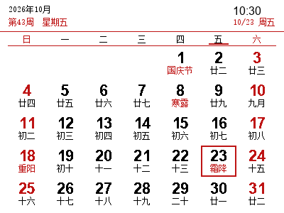
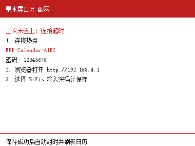
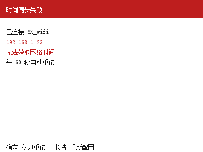

墨水屏日历是一块常驻桌面的“电子台历”：上电后自动联网校准时间，在 4.2 英寸三色墨水屏（400×300，黑/白/红）上显示当月公历，并在每个日期下面标注农历、二十四节气与传统节日。断电后画面仍会保留，适合长期摆放。
功能简介
- 月历视图：周日在最左，7 列排布；当月排 5 行时自动加大行距铺满屏幕，6 行月份自动压缩行高。
- 今日高亮：今天用 2px 红色方框圈出，表头红色显示“第 N 周 星期 X”，星期标题行在今日所在列下方加一条红色短横线。
- 农历与节日：日期第二行按“节日优先、其次节气、否则农历”显示；节日与节气标红，初一显示月份（闰月加“闰”字）。
- 自动对时：SNTP 依次尝试 3 个公共时间服务器，成功后写入 RTC，之后每 6 小时再校准一次。
- 网页配网：没有 WiFi 记录或连接失败时自动开热点，用手机浏览器选择 WiFi、输入密码即可，无需改代码。
- 按键翻月：上/下键逐月预览，确定键一键回到本月并立即重新对时。
- 自动刷新与跨天：默认每 10 分钟整屏重绘，跨天自动切回当月。
- 断网可用：WiFi 掉线不影响走时，每 30 秒自动重连，恢复后立即对时并重绘。
安装与启动
- 用 Chrome / Edge 打开墨水屏应用管理器并连接设备。
- 在应用中心安装必装驱动（提供
driver/epd4in2b.py屏幕驱动与GB2312-12.fon中文字库），再安装墨水屏日历，文件会写入设备/calendar目录。 - 点亮日历卡片上的星标，把它设为默认应用（写入根目录
device.json），重启后开机自动进入日历。 - 想开机跳过日历进入应用管理器：上电时按住上键或下键不放（GPIO40/39），开机检测到按键就会启动管理器。
安装完成后，点击应用卡片上的 ? 按钮可随时打开本说明页；日历运行期间长按确定键 3 秒也能清除 WiFi 配置并重启，重新进入配网。
首次使用：网页配网
- 上电后，如果
config.json里没有 WiFi 记录，或保存的 WiFi 连接失败，屏幕会显示墨水屏日历 配网提示页（含热点名、密码、配置地址）。 - 用手机或电脑的 WiFi 列表连接热点
EPD-Calendar-XXXX（XXXX 为芯片 MAC 后两字节），默认密码12345678。 - 浏览器打开
http://192.168.4.1/，页面顶部会再次显示热点名、热点密码与配置地址。 - 可点“扫描附近 WiFi”从下拉框里选择，也可以手动输入名称；只支持 2.4G 网络，开放网络密码留空。
- 点“保存并连接”，页面提示正在连接（最多约 20 秒）。成功后墨水屏自动对时并刷新为日历，热点随之关闭，WiFi 记录写入
/calendar/config.json。 - 失败时页面会提示原因，可点击“连接失败时点此返回配置页”重试；屏幕同时显示“连接失败：原因”并保留配网提示页。
配网页由设备上的单线程 HTTP 服务提供，一次只处理一个请求，扫描 WiFi 时请稍等几秒再操作。
界面说明
下面几张截图就是墨水屏实际显示效果（400×300）。
日历页
- 左上：黑色小字显示当前视图年月（如
2026年10月）；下一行红字，查看当月时显示第43周 星期五（ISO 8601 周次，周一为一周第一天），查看其它月份时显示往月预览或来月预览。 - 右上：大号（24px 点阵）数字显示时:分，下一行红字显示今天的月/日与星期。
- 星期标题：日、一 … 六，周六与周日标红。
- 日期格：第一行是 12×16 粗体日期数字（周末红色，今天为黑色），第二行是 12px 小字节日/节气/农历；今日整格用红色方框圈出。

上图：2026 年 10 月。今天（23 日）用红色方框圈出，表头红色显示“第43周 星期五”，国庆节、寒露、霜降、重阳等节日与节气标红。
提示页
配网、连接与对时过程中会临时显示提示页，顶部为红色通栏加白色标题：
正在连接 WiFi：显示正在连接的 WiFi 名称，随后自动校准时间。墨水屏日历 配网：列出热点名、密码、配置地址与三步操作，页脚提示“保存成功后自动对时并刷新日历”。时间同步失败：显示已连接的 WiFi 与 IP，红字提示“无法获取网络时间”，页脚说明“确定 立即重试 长按 重新配网”。

上图：配网提示页。依次显示上次失败原因、热点名（示例 EPD-Calendar-A1B2）、热点密码、配置地址与三步操作。

上图：时间同步失败提示页。显示已连接的 WiFi 与 IP，并提示每 60 秒自动重试，页脚为“确定 立即重试 长按 重新配网”。
按键操作
三个按键均为低电平触发、内部上拉，松开时才响应（长按确定键除外）：
| 按键 | 引脚 | 操作 | 功能 |
|---|---|---|---|
| 上 | GPIO40 | 短按 | 切换到上一月（预览） |
| 下 | GPIO39 | 短按 | 切换到下一月（预览） |
| 确定 | GPIO0 | 短按 | 回到本月，并立即重新对时、重绘 |
| 确定 | GPIO0 | 长按 3 秒 | 清除 WiFi 配置并重启，重新进入网页配网 |
GPIO0 通常就是开发板上的 BOOT 键。翻月可以一直向前/向后，跨年自动进位；尚未完成校时（停留在提示页）时上、下键不生效。
上图：按上/下键翻月后的“来月预览”。11 月只排 5 行，行距自动加大铺满屏幕；今天不在该月，所以不显示红色方框。
时间校准与自动刷新
- 对时服务器：依次尝试
ntp.aliyun.com、cn.pool.ntp.org、ntp.ntsc.ac.cn，每个 4 秒超时，前一个失败自动换下一个。 - 时区换算：取到 UTC 后按
utc_offset（默认 8）换算成本地时间写入 RTC，此后设备时间即为本地时间。 - 校准频率：成功后每 6 小时再对一次；未校准成功时每 60 秒重试；已有时钟但本次对时失败时每 5 分钟重试，期间照常显示日历。
- 断网重连：每 30 秒检查一次连接，掉线后用保存的 WiFi 重连（12 秒超时），连上立即对时并重绘；重启时若 NTP 不可用但 RTC 时间有效（2024–2099 年），直接沿用 RTC。
- 刷新节奏：每
refresh_minutes（默认 10）分钟整屏重绘一次，表头时钟的精度就是这个间隔；翻月、回本月会立即重绘并重置计时；跨天自动回到当月视图。 - 护屏：提示页内容与上次相同时跳过刷新，避免无意义的整屏刷新。
配置文件
配置保存在设备 /calendar/config.json，文件不存在或格式错误时使用默认值。可用应用管理器的文件视图编辑，保存后点状态栏的“软复位”（或在终端按 Ctrl-D）重启生效——配置只在启动时读取一次。
| 字段 | 默认值 | 说明 |
|---|---|---|
wifi_ssid | 无 | WiFi 名称，配网成功后自动写入，一般不用手填 |
wifi_password | 无 | WiFi 密码，配网成功后自动写入；开放网络为空字符串 |
utc_offset | 8 | 时区偏移（小时），支持小数，例如印度用 5.5 |
refresh_minutes | 10 | 定时整屏刷新间隔（分钟），小于 1 按 1 处理 |
ap_password | 12345678 | 配网热点密码，至少 8 位，否则热点无法开启 |
示例：
{
"wifi_ssid": "MyHome-2.4G",
"wifi_password": "12345678",
"utc_offset": 8,
"refresh_minutes": 10,
"ap_password": "12345678"
}农历、节气与节日
日期格第二行的显示优先级为：节日 → 节气 → 农历，命中的节日与节气用红色，普通农历用黑色。农历与二十四节气数据覆盖 1900–2100 年。
- 农历日期：初一显示月份（正月、二月 … 腊月），闰月显示“闰X月”，其余显示“初二 … 廿九、三十”。
- 公历节日：元旦、情人节、妇女节、植树节、愚人节、劳动节、青年节、儿童节、建党节、建军节、教师节、国庆节、圣诞节。
- 农历节日：春节、元宵、龙抬头、端午、七夕、中元、中秋、重阳、腊八、小年；除夕单独按“腊月最后一天”判断，可能是二十九或三十。
- 二十四节气：小寒、大寒 … 冬至共 24 个，按年份查表，当天显示节气名称。
上图：2024 年 2 月的往月预览。除夕、春节、元宵、立春、雨水等节日与节气标红，其余日期显示农历。
常见问题
屏幕一直停在“时间同步失败”
说明 WiFi 已连上，但拿不到网络时间。确认路由器能正常上网、没有屏蔽 NTP（UDP 123 端口）；短按确定键立即重试；换网络时长按确定键 3 秒重新配网。已经校准过的时间在断网后仍会继续走，只是不再校准。
手机连上热点却打不开配网页
热点名为 EPD-Calendar-XXXX，默认密码 12345678，地址是 http://192.168.4.1/，需要在浏览器地址栏输入而不是当关键词搜索。部分手机在热点无外网时会自动切回移动数据，请关闭“自动切换网络”，或在系统提示“此网络无法上网”时选择保持连接。
提示“密码错误”“未找到该热点”“连接超时”
ESP32 只支持 2.4G WiFi，请确认不是 5G 频段；核对名称大小写与密码；路由器开了 MAC 白名单或防蹭网时需先放行设备；隐藏 SSID 的网络要在页面手动输入完整名称。失败原因会同时显示在墨水屏上。
上/下键没反应
按键在松开时触发，一直按住不会连续翻月；停留在配网或对时提示页时上、下键无效，先用确定键触发对时。
想换 WiFi 或清空配置
在日历页长按确定键 3 秒，会清空 wifi_ssid 与 wifi_password 并重启进入配网（其它配置保留）；也可以直接在应用管理器里编辑 config.json 后软复位。
时间或日期不对
检查 utc_offset 是否与实际时区一致（默认东八区），修改后需要重启；RTC 年份不在 2024–2099 之间会被视为未校准，重新联网对时即可。农历、节气只覆盖 1900–2100 年。
刷屏慢、有闪黑和残影
三色墨水屏只支持整屏刷新，每次重绘需要数秒并伴随闪黑，属于正常现象；残影会在下一次整屏刷新后消失。想减少刷新可把 refresh_minutes 调大（如 30、60），表头时钟的精度会随之降低。
怎么退出日历回到应用管理器
重新上电时按住上键或下键不放，开机检测到按键会跳过默认应用直接进入应用管理器；也可以在应用管理器终端发送 Ctrl-C 中断日历，再重启并按住上/下键进入。
安装后开机没有自动进入日历
需要在应用中心点亮日历卡片上的星标“设为默认应用”（写入根目录 device.json），再重启设备；同时确认“必装驱动”已安装，否则会因找不到 epd4in2b 或中文字库而无法显示。